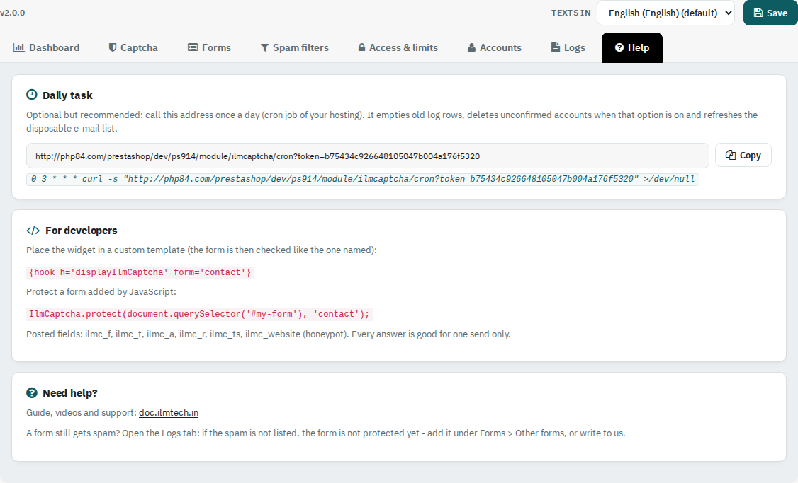

The daily task address, the hook and the JavaScript call for developers, and what to do if a form still gets spam.

Optional but recommended: copy the address on the Help tab into a cron job of your hosting, once a day. It empties old log rows, deletes unconfirmed accounts when that option is on and refreshes the disposable e-mail list every week.
Place the check in a custom template with {hook h='displayIlmCaptcha' form='contact'}. Protect a form added by JavaScript with IlmCaptcha.protect(element, 'contact'). Every answer is good for one send only.
Open the Logs tab with Every send logged. If the spam is not listed, the form is not protected yet: add it under Forms > Other forms, or contact us.